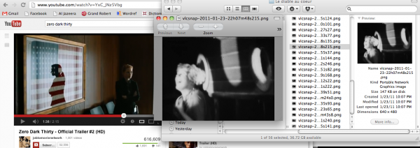
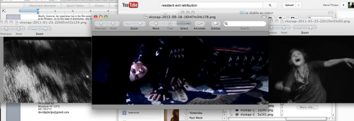
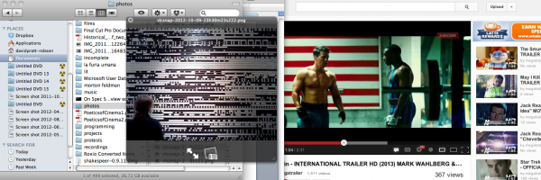
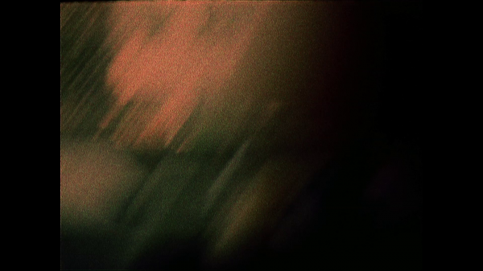

-
Past Futures: An Interview with David Phelps
by Phil Coldiron December 21, 2012
(Note: On Spec’s online premiere has ended.)
If you’re currently reading this it means that the world, for now, hasn’t ended. Having said that, 2012 turned out to be a year in which an alarming number of things did end, or seemed to end, or at least seemed to begin to end. David Phelps’ new short film, On Spec (which can be viewed in its entirety above), isn’t exactly eschatological, but it’s certainly a sign of the times, an occasionally inscrutable snapshot of a world where seismic shifts of global power trickle in constantly over the digital wire, this steady flow of information framing, and perhaps shaping, the domestic drama of three twenty-somethings who find themselves in a riff on the story of Achtaeon. So then it’s fitting that Phelps’ film is foregoing the usual routes–and the usual route of theatrical distribution is one of those things that’s at an end and/or a beginning, as the modes of both production and exhibition undergo their greatest changes in a century–in favor of premiering his film online via the essential Spanish film journal Lumière, which is presenting it for a two-week run along with a healthy set of notes written by Phelps (available in both English and Spanish).
I recently sat down with Phelps–who’s both a friend and a colleague at Mubi–over noodles in Chinatown to discuss his film, its place in the current landscape of cinema, and the world in general.
***
David Phelps: So I’m interviewing Phil Coldiron about On Spec.
Idiom: About your own movie.
Tell me what you liked.
The first time I watched I saw it as being in this vaguely early Ken Jacobs hang-out mode, which helped place it historically a little. But I recently watched it again, and some of it felt more willfully amateurish, like the lack of focus on any of the interior footage–
That didn’t seem that way the first time?
It seemed more inviting, whereas this time it felt more like something that was consciously stylish.
So like a pastiche of an amateur film? That’s interesting.
Maybe.
Like I’m going to make the greatest amateur film of all time. And just parody the form.
Not even that, more that you’re finding these certain amateurish qualities and looking at how those can be used consciously.
Right. Well, that’s the thin line between incompetence and art. But that’s always been the history of art, or maybe not always, but you know, post-classicism. The impressionists going out and doing the exact same thing, showing the brush strokes, that’s no different than showing the pixels. Not that that’s an evaluative comparison, but when you’re really limited on resources you have two choices: you either try to hide those resources, which I think is what people typically end up doing, or you try to emphasize them. And that is a tradition in film that I love, whether it’s Ken Jacobs, or Ulmer, or Rouch—he’d be another one where it’s very unclear whether you’re watching fiction or a backstage documentary about the making of a fiction. I think that was definitely something that I had in mind.
Screen shot 2012-12-19 at 3.40.52 PM.png
Do you see a fiction in this?
Oh, yeah, there’s definitely a fiction. Everything is fiction in this film; it’s different types of fiction. If you put a camera in front of anyone and there’s a staging, that’s the obvious one that everyone likes to talk about: “What are the boundaries between documentary and fiction?” The one that people don’t like to talk about are the ways that editing plays into fiction. And I think Rouch again is maybe the best example of this, what happens when you put two shots together.
In the sequence near the end of the film, with the music, what happens when I put a shot of Thomas against a shot of Elizabeth, looking up, against a shot of, let’s say, Elizabeth’s chest. This isn’t subtle stuff, but you create an entire narrative this way. Brakhage is someone else who I think is a very narrative filmmaker in a certain way – The Weir Falcon Saga or something like that – the way he’s putting these frames within frames, dreams within dreams or stories within stories, and everyone seems to be reacting to these other worlds or even different rooms as though they can see each other as well as we can. Or something like in Griffith, Way Down East, where they both wake up at the same time because they can hear each other’s dreams. So that’s editing, but then there’s actually staged stuff, in ”part 1”, and that’s the part that people tend to like the most, I think. And it was the easiest part, but I had it totally storyboarded and I edited it exactly the way I imagined it; that maybe took me a couple hours to edit that entire section. It’s an entire choreography in ostensible real time, or maybe not so ostensible real time, in which we’re moving around the apartment. It took me a long time to choreograph it in my mind, to come up with all these excuses for why the lights would be on and why the lights would be off, so that people would then go inside the bathroom depending on whether the light was on or the light was off, and then almost miraculously happen upon Elizabeth in the shower. If there’s a problem with the film for me it’s maybe that it opens itself up to too many fictions, and it has a sort of ambiguity of what the relationships are between these people—which was both the initial impetus but also I think maybe in the end a barrier, because it’s too open.
There was a little slip there where you moved from saying “fiction” to saying “narrative”–
That’s much better, yeah.
So I’m wondering if you think you can look at fiction as something all-encompassing – you put a camera on something and it is fiction on whatever level – whereas if start thinking of things in narrative terms then you’re implying some sort idea of coherence or communication.
I think that’s true. There’s all this interest, especially with what people call “contemplative cinema” about collapsing the boundaries between fiction and documentary, and that just really doesn’t interest me. I think it’s a false distinction to begin with, and that’s probably the point of contemplative cinema, to try to move beyond that.
It just gets turned into marketing.
And the filmmakers make it the point instead of the initial thing to move beyond. For me, yeah, the difference would narrative and documentary, I think that’s a much better way of putting it. Fiction I don’t even know where to begin with. It’s a made-up term, because fiction is in the eye of the beholder, that’s not something that’s on the screen. That’s your choice, how you see it, whether you want to call him Tom Cruise or Ethan Hunt.
I think narrative implies that there’s something guiding the sequence of events, arranging them in a way that’s essentially communicative. When you go to make this what do you think’s being communicated? I realize that’s both a banal and huge question.
Well let’s go back, because that’s an interesting presumption, that narrative implies a framework in which each term will be employed again. A great example would be Violent Saturday, the Richard Fleischer film; an amazing film, because it involves like twelve different characters in a small town, and they’re each established with a little trait up front, where say the girl is chewing bubble gum and the guy is sharpening his nails, and by the end of the film the bubble gum and the nails and everything else will come into play in this vast narrative to bring down the criminals. So it’s like that rule, if you opon a drawer and a gun is there, that shot’s got to pay off with murder at the end.
So this leads to all sorts of modes of cinema, mumblecore, but earlier people like Cassavetes and Rozier, where suddenly the narrative didn’t have to go anywhere, it could just hang out. Where you start with a narrative impetus, but you can just enjoy the narrative trek without the destination ever approaching. Rozier’s films are always about people trying to arrive somewhere, but they never get there, they’re just always moving in place. This all plays in a way into classic comedy of frustration, where there’s a goal that’s in sight.
To give another example, I saw this amazing review of Zero Dark Thirty which said the film has to justify torture, because otherwise it wouldn’t serve the narrative function in the film. And this is so extraordinary, and maybe on some level true, because we normally think that the narrative comes out of someone’s politics, which it does, despite the outward appearance that politics is really a consequence of the narrative, it comes out of everything on screen having to be justified. I don’t know if this is what Bigelow actually did, I would suspect she found a creative way not to be so blatant to the Violent Saturday point that torture has to play a real role within this perfect mechanism of the film.
Or another recent film, which I have seen, Django Unchained, which may actually be really close to On Spec in its treatment of narrative—where every narrative is assuming a certain politics, whether it’s “torture is horrible” or “torture is necessary” or “torture is brutal” at the same time he wants you to see the other side at all moments: so it’s always running these narratives up against each other. And that’s something that I really love about Tarantino, that he creates these entire narrative structures that he’s totally invested in, because he loves narrative, but he’s also totally suspicious of it at all moments, and he’s always trying to debunk what the narrative is forcing you to do. So at all moments the narrative has to lead to a conclusion, and then he can just delight in the absolute frustration as these people act civilized when we know that scene of violence or brutality is about to break out, at which point the civilized discourse starts to seem much worse than the actual brutality. But of course that frustration only plays that much more into a desire for an objective to be reached. I think that that’s maybe close to what I’d like to do, which is to have these structures, not that they do or don’t go somewhere, but that you can see the gaps and the holes and everything that’s around the narrative that had to be taken out for us to have this mechanism. To see all the shit that isn’t there. So in that way I think On Spec is an efficient film, where every shot counts, and is playing against the rest, but on the other hand you’re just seeing a bunch of wasted moments, all the things that are discarded, the things that don’t belong around something else. Specifically, the first part is really this narrative that for me is very, very strict leading to the moment of the shower curtain opening, and then I wanted to let it disperse, just to film the day from that moment and see what happens. So then we’re left with the day, which is supposedly a reaction to this event in the first, but it’s actually not a reaction to this, because it’s just a day. So that’s my interest in narrative. Dreyer had this line, or maybe it was Hitchcock, it could have been either one of them, where they said that anything that’s going on in a room is normal, but the second you know that there’s a dead body in the corner it changes everything. And that’s what narrative can do, it can let you re-see what’s already there, or let you see what’s in front of you in a new, which I think is the opposite of the kind of narrative we were talking about before which forces a politics. There’s also a kind of narrative that lets you reimagine reality.
Screen shot 2012-12-19 at 3.56.39 PM.png
To change directions a little, how did you come at the contrast between analog and digital, between light captured by celluloid and by pixels?
The best thing I think to do is to distinguish these things very clearly, but then to distinguish that within them are very different modes. A cellphone cam is not the same as a Mac’s Photo Booth. When I started doing all these massive, massive color changes during the editing, the thing I noticed was that when I applied color changes to the film stock it changed the context for what you were looking at – suddenly things that were day were now night, things that were day were now night, etc. – but when it’s digital it changes the content itself, it’s converted, which is what digital does, it converts it into something else other than light, it converts it into pixels. This is maybe another dangerous ambiguity of the movie, since I find this a really dangerous, dubious thing that digital does, it’s the same process as radar and all these surveillance technologies which just turn things into data, where the image can be analyzed perfectly. Tony Scott’s films are really good at showing that, with his preposterous surveillance technology, in which the image is data; the color, the light, all these that we take for aesthetic beauty, that’s data, and it’s data that can be manipulated and analyzed. But on the other hand, I was just trying to get down to the form of the thing, because everyone wants to cover up digital, they want it replace film.
They just want it to look like film.
They want it to look like film, right. They want it to look shiny and glossy and professional, and that’s not what it is, it’s made of pixels, and for me it was like getting to the brush strokes—I wanted to get at what is there. Which in itself I think is a somewhat dubious process, this aestheticizing, which I also tried to put within the film: what happens when you take war photos and suddenly they’re treated as music? Or even shots of your friends. Your entire sense of reality is something that can freeze or stutter, at any moment.
That leads it something else I wanted to ask you about, which is the way that language is turned into something graphic here.
That’s all straight from Michael Snow. A lot of this film is ripped off from Michael Snow; that’s not even a secret. There’s worse people. I could’ve ripped off Judd Apatow, and I actually came pretty close to doing that.
Anyway, so words. There are a lot of puns, and they’re really stupid puns. But part of using a pun is, again, this idea of an image that can speak through different frameworks: a word can speak through different frameworks, you’re brought back to the actual word that’s there. And that’s a whole other issue, because it’s phonetic and it’s graphic. But part of it was wanting to use these words as masses, as blocks. There’s one of them, I think it says “empire written in lightning.”
And “lightning” is half cut off by the edge of the frame.
So I wanted to play with all the different ways in which if you treat it like an object it can be cut off by the edge of the frame, it can overlap, it can get too big or too small, and if it heads toward you it can imitate 3D simply by having a bigger font. So all these incredibly cheap effects that you can use in this light that presumes to inhabit space, even the space of the screen, spatially. I don’t think I was successful at it, because I didn’t have enough time, but for the new version online, I did a Lumière title card sequence at the beginning, and I wanted to play with black and white. We always take black for the blank canvas of cinema and everything else is just put on top of that, so what I wanted – and I don’t think this necessarily works – is for the viewer to get used to white being just as natural as black, before the film even starts.
I want to bring it back to this point where you’re left conscious of yourself, with this light there, and that it’s you yourself who’ll have to project into it to convert this light back into reality to try to recover it. But that’s for the viewer to do, because this movie takes place in a movie that’s so far gone from reality – and maybe that’s the answer to your earlier question about converting the light, is to let the viewer have to say, “oh, this is so pretty,” but on the other hand try to remember what was originally there. So that’s the danger, coding is a stupid thing, and it’s so popular in so many shitty films, of trying to decode what the message is, “oh this means this, this means this…” But there’s another type of coding which I think is pretty good, which allows you to choose your framework, to choose how you want this to play.
“You” there being the viewer?
The viewer, the viewer…the filmmaker doesn’t matter at all by this point. So it’s you the viewer, to make a film of it what you want, which again is maybe another fault, that it’s like a buffet, a stockpiling of avant-garde and narrative and rom-com just in a giant blender: your avant-garde, romcom, broccoli and cheese soufflé.
Screen shot 2012-12-19 at 3.49.38 PM.png
To circle back to it seeming a little more opaque this time–
Maybe you’re trying to read a little more into it this time?
I’m sure that’s part of it, but I think it’s more a case of being aware of all of the frameworks that all these words in the opening set up; I can’t see those words – say, a joke about Standard & Poor – I can’t help but thinking about the conversation between those words and three twenty-somethings going about their day in Brooklyn. There’s maybe a little inscrutable about that to me.
Can’t you just think of those as headlines though? It’s like the beginning of Spione or Mabuse, where the stock exchange is crumbling and people are running around the city and they’re getting shot and they’re saying, “who’s responsible for this!” You need to be able to code right? There are all these random images that have to be decoded to a central source: “It is I.” And then you see him. But these are all the headlines that are being juxtaposed with what’s actually there. This is the context of the world; the whole world is around three people who are in an apartment. It’s all being channeled into this other world of the apartment, this purgatory—or heaven or hell.
You feel like it forces you to play a game?
No, not necessarily a game. I think this is probably one of the movie’s central strengths, this way that it opens thought, where you’re given context that doesn’t immediately align with what’s happening narratively.
Quite the opposite, yeah. It’s directly counterposed.
It’s skirting a line in more overtly engaging these narratives than maybe some of the films that we’ve discussed that came before it, in a way that makes it thornier to deal with to me.
I’m always facetious with words; I don’t trust words. Words are an invention. An image is a more dubious thing, in that it’s both symbolic and retains a trace of something real that was caught, which a word doesn’t, usually. So the words are facetious, but the image isn’t. And I think part of that is to say that we can talk all about this entire world, but it all centers back to this tree you see at the start from which the film launches out. In the ends there’s a tree. That’s a bad way of putting it, but it is what it is. However you want to frame the world, in the end, a tree’s a tree. And maybe that’s many different trees: a tree by light; a tree by dark; in one place or another; one type of tree or another. The word just reduces it whereas at least the light makes it more precise.
A lot of people really don’t like the intertitles. That’s by far the most, I guess, uncomfortable part? It’s something that I added at the very end. I really didn’t want to do intertitles, and I put them in that very end. It took me a while to put them in, to do the rhythms, but I wrote them all in two or three days. It was necessary to me rhythmically, and that’s what I put them in, because the rhythm just wasn’t working, of just showing a tree and moving forward, it was transcendental. It was miraculous, but it wasn’t miraculous in any context. So now we have these words and then suddenly out of that there comes this flash of this very simple thing, and I’m really happy with it. Maybe it should be a little slower, maybe the rhythms aren’t totally there, but basically they are. So there are words and words and words, and then the image arises out of it. Which is maybe much more transcendental than the original way of just showing the tree as it developed, but it really needs to have that back and forth, and the words give it that back and forth. The words butting up against not just each other, but against the image, and the image against the words, and I think that’s that contact that rhythmically it’s like a treble and bass.
On Spec (2012)
Do you see any contrast between the words as something fundamentally external and the image as internal, and where do you see yourself sitting in relation to those? Put another way, how much distance is there between you and the movie, On Spec?
I’m not sure how to come at that. I’ll start by going back to what I was trying to say before, which is that if we look at history, we have this Zemeckis idea of history, all big events, but to actually get a living history of a time is equally difficult, and it’s something that’s been attempted, but at the expense of actually looking at the framework of what subtends us, what’s created the structure and infrastructure for how we live. So the words are telling us this is 2012 with a lot of big events, and all these world-historical things are going on, but then it’s grounded in this specific place and time with this tree, and the window, which is a sort of screen.
How do I actually live in relation to these things? I guess that actually is the narrative of the film, which is just trying to figure out how to even pose that question. We’re, in America, the way we live is in debt; I really think that debt is the primary structure, not just politically, but personally: the constant sense of guilt of what we owe each other. But when I speak in those broad terms, I don’t think it’s meaningful to again code the whole film around a moral. Still, it was a starting point, a launching point we could forget about later and rediscover for ourselves, for trying to take the Actaeon story and put that in the context of this America where we’re constantly asking for affection. We owe each other affection. Very American.
I don’t know: ultimately, I think it’s better to look at the film to answer that question. But that is the question; how often are we able to look at our own life and see it as a stage that was constructed on the discourse of our times, of history, and see ourselves as a historical product. The guy who does this better than anyone is Flaubert; I read Sentimental Education over the summer, done with this tension between the personal and the political, in which this guy constantly thinks that he’s living this romantic life out of Balzac, even before Balzac: but it’s counterposed against the politics that are swirling around him, even while he’s a product of all the historical trends for dandyism that let him think he’s transcending History at the same time. That’s a really amazing thing that Flaubert gets at by being precise, by saying that as that as he’s walking on this street, at this time in history and thinking of Madame Arnoux, actually if you place this historically on the map, that three blocks away a riot is happening and he can just hear it as it would sound from three blocks away.
And now instead of three blocks away it’s on the other side of the world.
Exactly, but it’s right in front of our eyes. It’s the news. But that’s the thing today, is that the news won’t tell you about drone attacks and surveillance and all these things that are going on, but mainstream television will discuss all these things. Homeland and so forth, whatever their politics, will bring these things to the surface that the news won’t talk about because it’s not official policy. So the pop media is like the subconscious of our time: if you want to get the news you have to watch Resident Evil.
Montages by David Phelps—for Daniel Schmidt